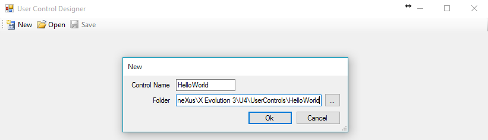
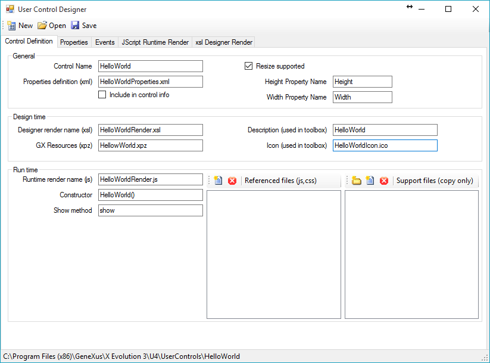
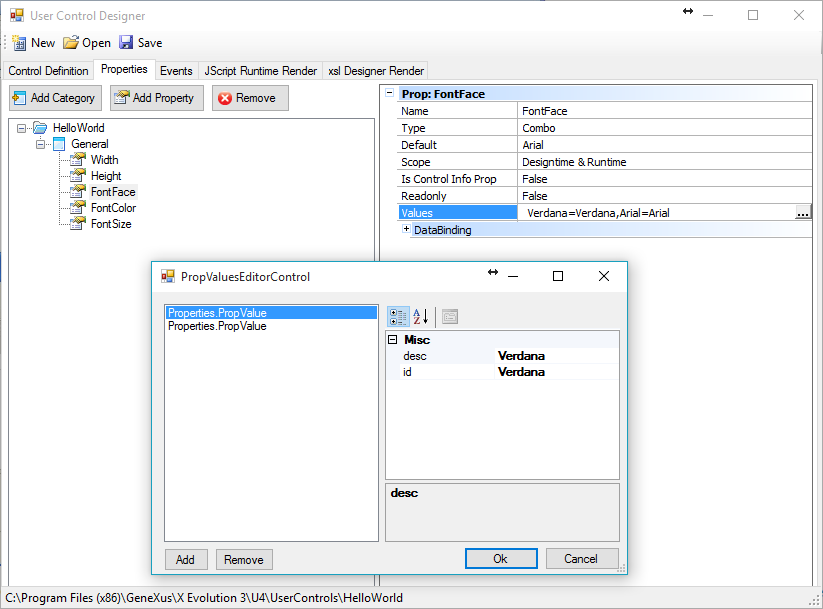
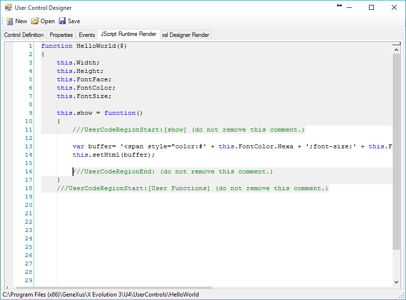
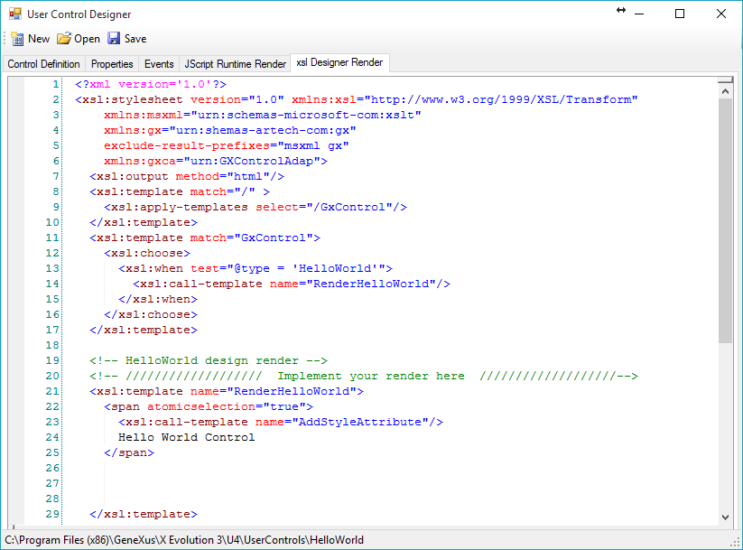
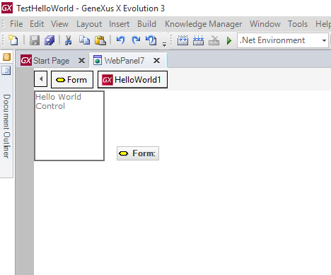
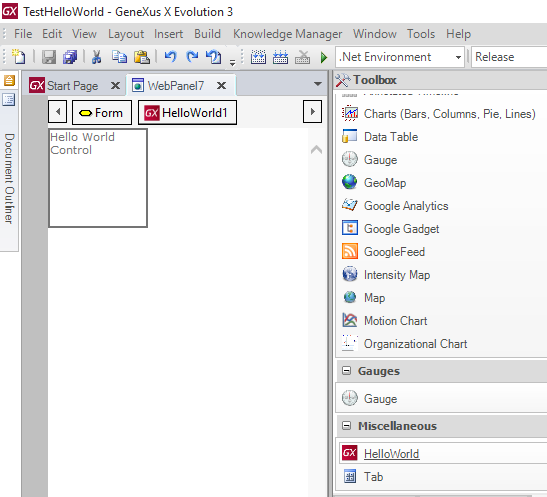
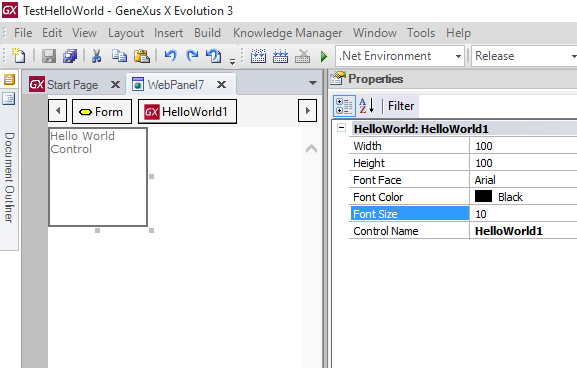
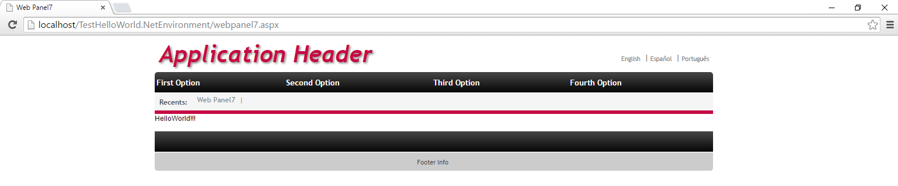

|
The purpose of this document is to explain how to create a simple "Hello World" user control. After completing this step by step sample you will have a new user control named "Hello World" in your toolbox. What does this control do? After dragging this user control to your web form (as you usually do with text boxes, grids and so on) the control will just display a "Hello World" message in your GeneXus application with the color and font that you will be able to set using the control properties. Most likely, creating a "Hello World" user control won't sound very appealing but remember that this is just for learning purposes. After reading this tutorial you can start thinking about creating really interesting user controls like Menus, Treeviews, Silverlight controls and so on. So let's first define what exactly the control will do. "Hello world" User Control Definition The control will do the following:
Creating the Control 1) Execute "UserControlEditor.exe" (User Control Editor ) which is under the GeneXus installation directory and press the New button. Enter the name of the user control and the folder location. All user controls must be placed under the UserControls directory which is also under the GeneXus installation directory.  2) Under the Control Definition tab, set the "Icon (used in toolbox)" property. In this case we are using an Icon named HelloWorldIcon.ico which has to be placed under the HelloWorld folder that we have created in step 1. Because this is a simple example, there isn't any more work to do in this tab.  3) As we stated before, the control must have 3 properties that will allow us to set the "Hello World" text, font and size. Consequently, under the Properties tab we have to create 3 properties:
 4) At the time of rendering our control, GeneXus will invoke the Show method of our runtime render file (specified under the control definition tab). This file can be acceded under the JScript Runtime Render tab and is where we will have to program all the main logic of our control. In this case, as we only want to display a "Hello World" message with a given font, color and size, the render file will contain the following:  Bear in mind that all the code shadowed in grey is automatically generated by the editor so you will only have to add the "Hello World" text with the parameters (font, color and size) that you receive from GeneXus. In this case this line is: var buffer= '<span style="color:#' + this.FontColor.Hexa + ';font-size:' + this.FontSize + ';font-family:' + this.FontFace + '">HelloWorld!!!</span>' 5) This step is optional: when creating a user control, indicate how to display your control at design time (in the GeneXus IDE). You can, for example, display an image representing your control or you can do more sophisticated things like rendering the control dynamically according to its properties as in GXChart. In this case, let's just display a simple "Hello World Control" text when the control is dragged to the web form. In order to do that, it is necessary to edit the runtime render file under the XSL Designer Render tab by adding only the "Hello World Control" text, as follows:  After that, you control will be displayed as follows:  6) Close GeneXus (if opened) and run "Genexus.exe /install" under the GeneXus installation directory. Then start GeneXus as usual. Finally, your control is finished and ready to be used!! Using the Control Let's now use the control we have just created. This is a very straightforward process: 1) Create a web panel and drag the "HelloWorld" control from the toolbox.  2) Set its properties  3) Run!  Sample Download Download the sample here
|
| Backlinks |
| Hello World Container User Control |
| Toc:Web User Controls |